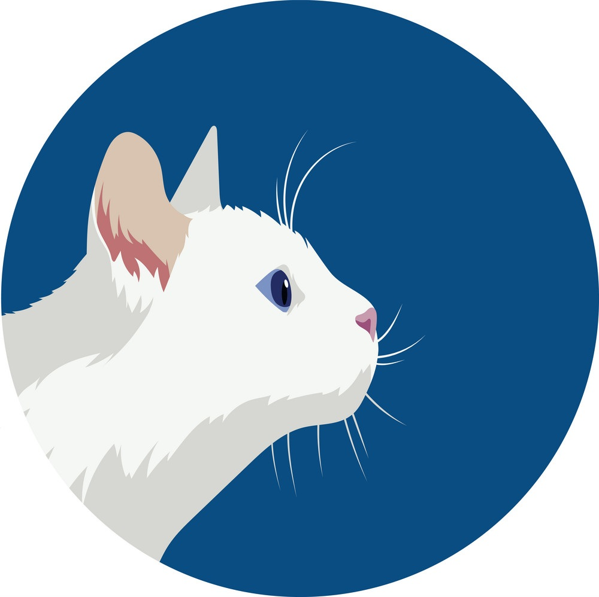

Kişisel Bilgiler
Ad Soyad:
Mevlüde Gül ER
Doğum Tarihi:
09.09.1992
Özet
Bu özgeçmişte kişisel bilgiler, eğitim durumu, tecrübeler ve beceriler bulunur.
Eğitim
İlk Öğretim:
Cumhuriyet İlköğretim Okulu
Lise
Atatürk lisesi (54.00) - Mezuniyet 2010
Üniversite
Ondokuz Mayıs Üniversitesi / Bilgisayar Programcılığı (3.72) - Mezuniyet 2020
Tecrübe
2016, 2018 yılları:
Carrefoursa çalışanı (4 ay)2019
Okul Stajı2021:
Yeşilırmak Mesleki ve Teknik Anadolu Lisesi - Bilgisayar Öğretmeni (2 ay)2023:
LcWaikiki (kısa süreli)2023
Sagre Butik (devam ediyor)
Beceriler
- c#
- html
- css
- sql
- bilgisayar bakımı